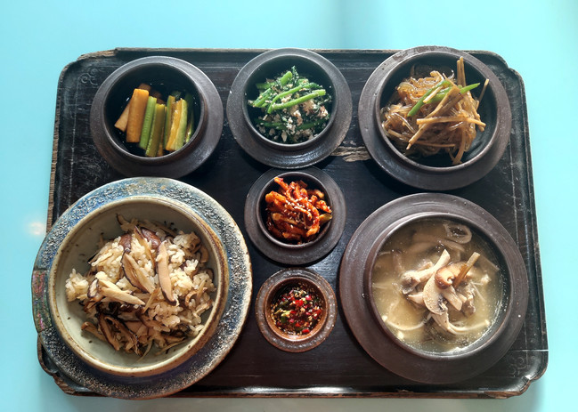

제주도의 음식
- 갈치조림
갈치조림은 한국의 생선 요리이다. 갈치를 이용한 생선조림으로, 토막 친
갈치를 무 등의 채소와 함께 파, 마늘, 국간장, 고춧가루 등으로 양념하여
조린다.
- 몸국
몸국은 제주도의 향토 음식으로, 돼지고기를 삶으면서 생긴 국물에 모자반을
넣고 끓인 국이다.
- 흑돼지구이
- 전복
- 고등어구이
- 해물라면
- 오메기떡
- 삼계탕
삼계탕은 한국 요리 중 하나로 닭 한 마리를 통째로 인삼, 대추, 생강, 마늘
등의 재료와 함께 고아 만든다.
- 고기국수
고기국수는 제주도 전통 음식 중 하나다. 돼지고기와 뼈를 푹 삶아 소금으로만
간을 한 육수에, 면을 넣고 삶아 국물과 면 위에 고명으로 돼지고기 수육을
올리는 요리이다.
